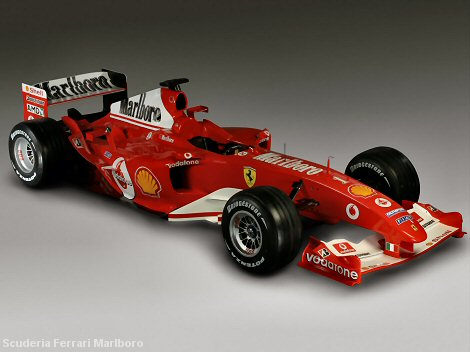
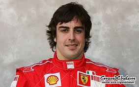
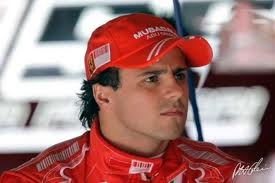

Ferrari

2012
Initially recalcitrant F2012 well off pace in opening rounds, but improves rapidly in hands of Alonso, who repeatedly beats superior machinery to lead championship by 40 points going into summer break, with an under-pressure Massa languishing in 14th place.
Team
- Full Team Name: Scuderia Ferrari
- Base: Maranello, Italy
- Team Principal: Stefano Domenicali
- Technical Chief: Pat Fry
- Driver: F Alonso
- Driver: F Massa
- Chassis: F2012
- Engine: Ferrari 056
- Tyres: Pirelli
- First Season: 1950
- World Championships: 16
- Highest Race Finish: 1 (x219)
- Pole Positions: 207


Terug naar de hoofdpagina